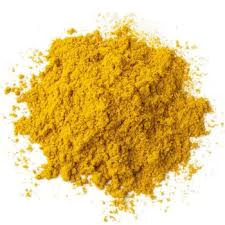
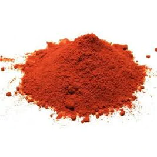
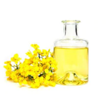

Curry indien
Produit issu de l'agriculture biologique, mélange fabriqué et moulu en France.

Paprika doux
Qu’il soit doux ou piquant, le paprika colore les plats de son rouge éclatant et les parfume délicatement. On le cuisine dans les goulaschs, le poulet et les crustacés.

Huile de colza
Contient noix, lait et gluten.En raison de sa composition équilibrée en acides gras, l'huile de colza est considérée comme une huile alimentaire particulièrement précieuse. Notre huile de colza BIO PLANÈTE, élaborée à partir de colza non génétiquement modifié, permet également d'enrichir les saveurs de vos préparations froides. son parfum de graine frais donne de l'ampleur aux plats consistants et met bien en valeur les salades de choux, de haricots, de pâtes et de pommes de terre. Elle convient très bien aussi aux marinades de légumes.